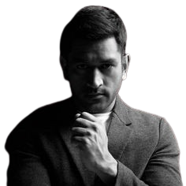

“You Don't play for the crowd, You are playing for the country.”

Biography
M.S. Dhoni, born on July 7, 1981, is a former Indian cricketer and one of the most successful captains in the history of Indian cricket. Hailing from Jharkhand, Dhoni made his debut in 2004 and quickly rose to prominence for his explosive batting style and astute captaincy. Known as "Captain Cool," he led the Indian cricket team to numerous victories, including the 2007 ICC World Twenty20, the 2010 and 2016 Asia Cups, and the 2011 ICC Cricket World Cup, where he famously sealed the win with a six. Dhoni is admired for his calm demeanor under pressure and his innovative captaincy. He retired from international cricket in August 2020, leaving an indelible mark on the sport.